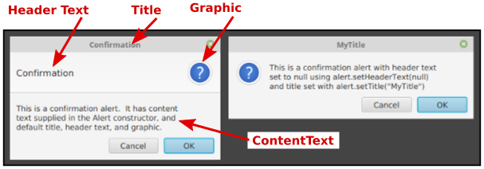

Mostly Windows and Dialogs
All of the sample GUI programs that we have looked at have used a single window. However, many real programs use multiple windows. In this section, we look at how to manage a multi-window application. We will also discuss dialog boxes—small popup windows that are mainly used for getting input from the user. As a bonus, you get to learn about WebView, a JavaFX control that implements much of the functionality of a web browser window.
Dialog Boxes
A dialog, or dialog box, is a window that is dependent on another window. That window is the "parent" or "owner" of the dialog box. If the parent window is closed, the dialog box is automatically closed as well.
A dialog box can be modal or modeless. When a modal dialog box is opened, its parent window is blocked. That is, the user cannot interact with the parent window until the dialog box is closed. There are also application modal dialog boxes, which block the entire application, not just one parent window. Many dialog boxes in JavaFX are application modal. Modal dialog boxes are often popped up during program execution to get input from the user or sometimes just to show a message to the user.
Modeless dialog boxes do not block interaction with their parent windows, but they will be closed automatically when the parent window closes. A modeless dialog box might be used to show an alternative view of data from the parent window, or to hold some controls that affect the window.
It is possible to make a Stage work as a dialog box, but many dialog boxes in JavaFX programs are created as objects belonging to the class Dialog, from package javafx.scene.control, or to one of its subclasses. A Dialog, dlg, has two instance methods for showing the dialog: dlg.show() and dlg.showAndWait(). If the dialog is shown using dlg.showAndWait(), then it is modal. (A dialog opened using showAndWait() is not just modal; it is application modal.) The showAndWait() method does not return until the dialog box has been closed, so that any input from the dialog box will be available to the program immediately after the call to showAndWait(). If the dialog is shown using dlg.show(), on the other hand, the dialog is modeless. The show() method returns immediately, and the user can then use both regular windows and the dialog box, and can switch back and forth between them. Using a modeless dialog box is a little like parallel programming—you have to understand that two things are going on at the same time. We will consider only modal dialog boxes here.
Dialog<T> is a parameterized type. The type parameter represents the type of value that will be returned by the showAndWait() method. The return type is actually Optional<T>, representing a value of type T that might or might not be present. Optional is defined in package java.util. An Optional has a boolean method isPresent() to test whether the value is present, and a method get() that returns the value if one is present. An exception occurs if get() is called when no value is present. This just means that if you want to use the return value from showAndWait(), you should first use isPresent() to test whether a value was actually returned.
A dialog box will ordinarily contain one or more buttons for closing the dialog. Typical button names include "OK", "Cancel", "Yes", and "No". The most common buttons are represented by the enumerated type ButtonType, which has values including ButtonType.OK, ButtonType.CANCEL, ButtonType.YES, and ButtonType.NO. ButtonType is a common return type for a Dialog, representing the button that the user clicked to close the dialog. In that case, the dialog box is of type Dialog<ButtonType>.
The class Alert is a subclass of Dialog<ButtonType> that makes it easy to create dialogs that show a text message to the user, along with one or two buttons. This class was already used in Subsection 11.2.3, without much explanation, to show error messages to the user. An alert can be created with
Alert alert = new Alert( alertType, message );The first parameter is of type Alert.AlertType which is a nested enumerated type with values including Alert.AlertType.INFORMATION, Alert.AlertType.WARNING, Alert.AlertType.ERROR, and Alert.AlertType.CONFIRMATION. Alerts of the first three types will have a single "OK" button and do nothing but show the message to the user; for these alerts, there is no reason to check the return value of alert.showAndWait(). A confirmation alert has an "OK" button and a "Cancel" button and is typically used to ask whether the user would like to continue with some potentially dangerous operation such as deleting a file; in this case, checking the return value is important. Here is a typical use:
Alert confirm = new Alert( Alert.AlertType.CONFIRMATION,
"Do you really want to delete " + file.getName() );
Optional<ButtonType> response = confirm.showAndWait();
if ( response.isPresent() && response.get() == ButtonType.OK ) {
file.delete();
}In addition to buttons, a Dialog can have: a content area; header text that appears above the content area; a graphic that appears next to the header text, if there is any, or next to the content; and of course a title in the title bar of the dialog window. Usually the graphic, if any, would be a small icon image. For an Alert, the message goes in the content area. The other properties are set automatically, depending on the alert type, but they can be changed by calling methods from the Dialog class before showing the alert:
alert.setTitle( windowTitle );
alert.setGraphic( node );
alert.setHeaderText( headerText );Any of the values can be null. The content can be set to an arbitrary scene graph node, replacing the text of the message, by calling
alert.getDialogPane().setContent( node );but it would be more common to do that for a plain Dialog than for an Alert. Here are a couple of confirmation alerts, showing the various components of the dialog window. For the dialog box on the right, the header text is null. Note, by the way, that to get multiline text in an alert, you have to include line feed ("\n") characters in the text.

For an example of a dialog that gets input from the user, the class TextInputDialog is a subclass of Dialog<String>, meaning that the return value of showAndWait() will be Optional<String>. A TextInputDialog contains a TextField where the user can enter a line of text, and it has an "OK" button and a "Cancel" button. The constructor has a parameter of type String that represents the initial content of the text input box. If you want to ask a question or show some message to the user, you can put it into the dialog header text. The return value, if present, will be the content of the input box. Note that the return value can be the empty string. If the user clicks "Cancel" or simply closes the dialog box, then the return value is not present. Here is a typical usage:
TextInputDialog getNameDialog = new TextInputBox("Fred");
getNameDialog.setHeaderText("Please enter your name.");
Optional<String> response = getNameDialog.showAndWait();
if (response.isPresent() && response.get().trim().length() > 0) {
name = response.get().trim();
}
else {
Alert error = new Alert( Alert.AlertType.ERROR,
"Anonymous users are not allowed!" );
error.showAndWait();
System.exit(1):
}Since I find Alert and TextInputDialog a little cumbersome to use (especially since I tend to prefer dialogs without icons), I wrote my own utility class, SimpleDialogs.java, that defines several more convenient static methods for showing some common kinds of dialog. In particular,
- SimpleDialogs.message(text) — shows the text and an OK button. There is no return value. The text will be automatically wrapped, so that line feed characters are not needed in long messages. An optional second parameter can be included to specify the title for the dialog window.
- SimpleDialogs.prompt(text) — shows the text and a text input box, with an OK button and a Cancel button. This method returns a String, which will be the content of the input box if the user clicks OK, or will be null if the user cancels the dialog. The window title can be given as an optional second parameter, and the initial content of the text input box as an optional third parameter.
- SimpleDialogs.confirm(text) — shows the text along with "Yes", "No", and "Cancel" buttons. The return value is a String which will always be one of "yes", "no", or "cancel". Again, the window title can be given as an optional second parameter.
There are some other options, including a basic color chooser dialog, which you can learn about by reading the source code. The program TestDialogs.java lets the user try out the dialogs that are defined in SimpleDialogs.
WebView and WebEngine
In the rest of this section, we will look at a multi-window web browser program. Writing a web browser sounds complicated, and it is, but JavaFX makes it pretty easy, by doing most of the work in a couple of standard classes. The WebView class, in package javafx.scene.control, represents a control that can load and display a web page. It handles most web pages pretty well, including running JavaScript code. (JavaScript is the programming language that is used to program active web pages; it is not closely related to Java.) A WebView is basically the "view" part of the Model-View-Controller pattern (Subsection 13.3.2). The actual work of loading and managing the web page is done by an object of type WebEngine that is part of the "controller." The "model" would be a data structure containing the content that is displayed in the web page. The model is created by the WebEngine when a page is loaded, and the WebView then displays the content.
A WebView must be placed into a window. The sample class BrowserWindow.java is a subclass of the standard window class, Stage, that represents a complete web browser window. A BrowserWindow contains a WebView along with a menu bar and some other controls. In particular, there is a text-input box where the user can type the URL for a web page and a "Load" button that the user can click to load the web page from that URL into the WebView. In addition, the BrowserWindow constructor can specify an initial URL to be loaded when the window is first opened.
A WebView has an associated WebEngine that can be obtained by calling webEngine = webview.getEngine(). Then, to load a web page, you can simply call
webEngine.load( urlString );where urlString is a string containing the URL. (URLs were discussed in Subsection 11.4.1.) The urlString must start with a "protocol" such as "http:" or "https:"; in my program, I add "http://" to the front of the URL string, if the string does not already specify a protocol.
A new web page will also be loaded automatically if the user clicks a link on the page that is currently being displayed.
Web page loading is asynchronous. That is, webEngine.load() returns immediately, and the web page is loaded in a background thread. When the loading has completed, the web page is shown in the WebView. If the load fails for some reason, there is no automatic notification. However, you can get some information about what is going on by adding listeners to two observable String properties of the web engine: the location and the title. The location is the URL of the web page that is currently being displayed or loaded, while the title is the title of the current web page, which usually appears in the title bar of the window that displays the web page. For example, the BrowserWindow class monitors the title property and sets its window title to match:
webEngine.titleProperty().addListener( (o,oldVal,newVal) -> {
if (newVal == null)
setTitle("Untitled " + owner.getNextUntitledCount());
else
setTitle(newVal);
});(I will discuss the "owner" below.) It also monitors the location property and displays its value in a Label at the bottom of the window.
To monitor the progress of loads, you can also add a listener to the property webEngine.getLoadWorker().stateProperty(); see the BrowserWindow.java source code for an example.
I said above that a WebView (with its WebEngine) can run JavaScript code that occurs on web pages. That is not quite true. JavaScript has subroutines for popping up certain simple dialog boxes: an "alert" dialog to simply display a message to the user; a "prompt" dialog to ask the user a question and get back a response string; and a "confirm" dialog that shows a message with an "OK" and a "Cancel" button. For a confirm dialog, the return value is a boolean that tells whether the user dismissed the dialog by clicking "OK". By default, requests from JavaScript to show these dialogs are ignored by the WebEngine. However, it is possible to add event handlers to the web engine to respond to those requests. In BrowserWindow, I use dialog boxes from my SimpleDialogs class to respond to the events. For example, when JavaScript tries to pop up an alert dialog, the web engine generates an event of type AlertEvent. The data in the event object is the message that JavaScript wants to display. The BrowserWindow class responds by using SimpleDialogs.message() to display the message to the user:
webEngine.setOnAlert(
evt -> SimpleDialogs.message(evt.getData(), "Alert from web page") );Handling prompt and confirm dialogs is a little different, since they must return a value. Here is what's done in the sample program:
webEngine.setPromptHandler( promptData ->
SimpleDialogs.prompt( promptData.getMessage(),
"Query from web page", promptData.getDefaultValue() ) );
webEngine.setConfirmHandler( str ->
SimpleDialogs.confirm(str, "Confirmation Needed").equals("yes") );I haven't yet discussed the menu bar for a BrowserWindow. The menu bar contains a single menu, named "Window". That menu contains commands for opening new browser windows and for closing the current window. It also contains a list of browser windows that are currently open. The user can bring a different window to the front of the screen by selecting the window from that list. To understand how that works, you need to understand how BrowserWindow is used in a complete, multi-window program.
Managing Multiple Windows
The class BrowserWindow is not an Application. It cannot be run as a program; it represents just one window in a multi-window program. The executable class for the program is defined in WebBrowser.java. The class WebBrowser, like any JavaFX program, is a subclass of Application. It depends on BrowserWindow.java and SimpleDialogs.java, so you need all three Java files to run the program.
An Application has a start() method that is called by the system when the application begins. The method has a parameter of type Stage that represents the "primary window" for the program, but there is no requirement that the program actually use that window. The start() method in WebBrowser ignores the primary window and instead creates and shows a window of type BrowserWindow. That is the first window opened when the program is run. It is set to load the front page of the web version of this very textbook.
That could have been everything that WebBrowser.java needs to do — except for the "Window" menu, which contains a list of all open windows. That list is not part of the data for an individual window, so it has to kept somewhere else. In the web browser application, the application object, of type WebBrowser, maintains the list of open windows. There is only one application object in the program, so we have just one list of open windows. (Another possibility would have been to make the window list a static member variable in the BrowserWindow class, since static variables in a class are shared by all instances of the class.) The WebBrowser class has a newBrowserWindow() method for opening new windows. A BrowserWindow has an instance variable, owner, that refers to the WebBrowser application that opened the window. When the browser window wants to open a new window, it does so by calling owner.newBrowserWindow(url), where the parameter, url, is the URL of the web site to be loaded by the new window, or is null to open an empty browser window.
By default in JavaFX, the size of a window is determined by the size of the Scene that it contains, and the window is centered on the screen. However, it is possible to set the size and location of a window before it is opened. For a multi-window program, it is not desirable for all of the windows to appear in exactly the same location. And it turns out that the default size for a BrowserWindow is probably too small for most computer screens. In the WebBrowser application, each window that is opened is offset a little from the location where the previous window was opened, and the size of the window depends on the size of the screen.
The class Screen, in package javafx.stage has a static method Screen.getPrimary() that returns an object containing information about the computer's main screen. And that object in turn has a method Screen.getPrimary().getVisualBounds() that returns a Rectangle2D representing the usable area of the main screen. This is used in the program's start() method to compute a size and location for the first window:
public void start(Stage stage) { // (stage is not used)
openWindows = new ArrayList<BrowserWindow>(); // List of open windows.
screenRect = Screen.getPrimary().getVisualBounds();
// (locationX,locationY) will be the location of the upper left
// corner of the next window to be opened. For the first window,
// the window is moved a little down and over from the top-left
// corner of the primary screen's visible bounds.
locationX = screenRect.getMinX() + 30;
locationY = screenRect.getMinY() + 20;
// The window size depends on the height and width of the screen's
// visual bounds, allowing some extra space so that it will be
// possible to stack several windows, each displaced from the
// previous one. (For aesthetic reasons, limit the width to be
// at most 1.6 times the height.)
windowHeight = screenRect.getHeight() - 160;
windowWidth = screenRect.getWidth() - 130;
if (windowWidth > windowHeight*1.6)
windowWidth = windowHeight*1.6;
// Open the first window, showing the front page of this textbook.
newBrowserWindow("https://math.hws.edu/javanotes/index.html");
} // end start()When a window is opened in the newBrowserWindow() method, its size and location are taken from the variables windowWidth, windowHeight, locationX, and locationY. And the values of locationX and locationY are modified so that the next window will be placed at a different location. In addition, the new window is added to the open window list. We also have to make sure that the window is removed from that list when it is closed. Fortunately, a window generates an event when it is closed. We can add an event handler to listen for that event, and the event handler can remove the window from the open window list. Here is the code for newBrowserWindow():
void newBrowserWindow(String url) {
BrowserWindow window = new BrowserWindow(this,url);
openWindows.add(window); // Add new window to open window list.
window.setOnHidden( e -> {
// Called when the window has closed. Remove the window
// from the list of open windows.
openWindows.remove( window );
System.out.println("Number of open windows is " + openWindows.size());
if (openWindows.size() == 0) {
// Program ends automatically when all windows have been closed.
System.out.println("Program ends because all windows are closed");
}
});
if (url == null) {
window.setTitle("Untitled " + getNextUntitledCount());
}
window.setX(locationX); // set location and size of the window
window.setY(locationY);
window.setWidth(windowWidth);
window.setHeight(windowHeight);
window.show();
locationX += 30; // set up location for NEXT window
locationY += 20;
if (locationX + windowWidth + 10 > screenRect.getMaxX()) {
// Window would extend past the right edge of the screen,
// so reset locationX to its original value.
locationX = screenRect.getMinX() + 30;
}
if (locationY + windowHeight + 10 > screenRect.getMaxY()) {
// Window would extend past the bottom edge of the screen,
// so reset locationY to its original value.
locationY = screenRect.getMinY() + 20;
}
}The WebBrowser class has a method getOpenWindowList() that returns the open window list. This method is used by a BrowserWindow when it constructs the "Window" menu. This is not done in a very efficient way: The menu is rebuilt each time it is shown. A menu emits an event when the user clicks the menu name, just before the menu is shown. The BrowserWindow registers a handler for that event with the Window menu. The event handler gets the open window list by calling owner.getOpenWindowList() and uses it to rebuild the menu before it appears on the screen. Here is the code, from the BrowserWindow class.
private void populateWindowMenu() {
ArrayList<BrowserWindow> windows = owner.getOpenWindowList();
while (windowMenu.getItems().size() > 4) {
// The menu contains 4 permanent items. Remove the other
// items, which correspond to open windows and are left
// over from the previous time the menu was shown.
windowMenu.getItems().remove(windowMenu.getItems().size() - 1);
}
if (windows.size() > 1) {
// Add a "Close All" command only if this is not the only window.
MenuItem item = new MenuItem("Close All and Exit");
item.setOnAction( e -> Platform.exit() );
windowMenu.getItems().add(item);
windowMenu.getItems().add( new SeparatorMenuItem() );
}
for (BrowserWindow window : windows) {
String title = window.getTitle(); // Menu item text is the window title.
if (title.length() > 60) {
// Let's not use absurdly long menu item texts.
title = title.substring(0,57) + ". . .";
}
MenuItem item = new MenuItem(title);
final BrowserWindow win = window; // (for use in a lambda expression)
// The event handler for this menu item will bring the corresponding
// window to the front by calling its requestFocus() method.
item.setOnAction( e -> win.requestFocus() );
windowMenu.getItems().add(item);
if (window == this) {
// Since this window is already at the front, the item
// corresponding to this window is disabled.
item.setDisable(true);
}
}
}And that just about covers things. As you can see, it's not very difficult to manage a multi-window application. And it is wonderfully easy to write a reasonably functional web browser in JavaFX. This has been a good example of building on existing classes. And we've also seen some nice new examples of working with events. With that, we have almost reached the end of this textbook. The final section will cover a few odds-and-ends of GUI programming.